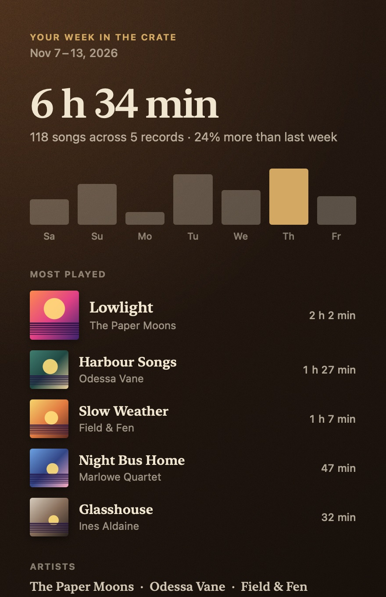
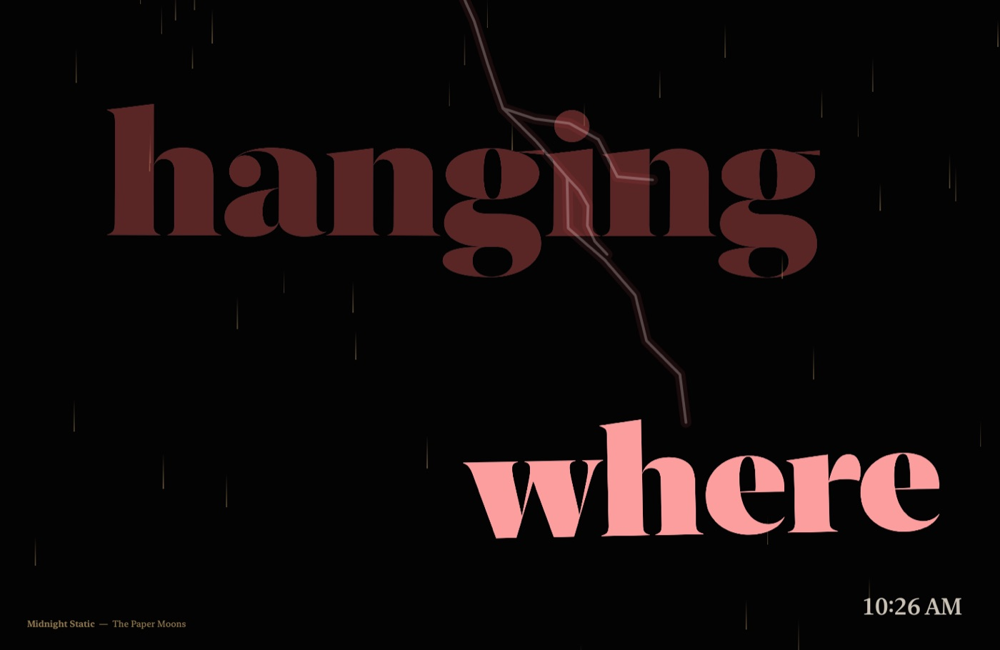

A deck worth looking at
Teak plinth, brushed plate, strobe dots on the platter. The arm swings onto the record when you press play.
Encore turns whatever Spotify or Apple Music is playing into a living desktop, a notch player and lyrics in time.


Each scene puts the album you're playing on display behind your windows. Its lights move with the music.
A wall of glass fifteen floors up. Rain runs down it, hover cars cross the avenues, and your album plays on a tower screen.

A library desk on a wet evening. The candle flickers, and the green lamp brightens with the bass.

Light through the blinds, dust drifting in the beams and a houseplant that sways.

Straight down onto the desk: the sleeve, the deck and the pile of what you've played.

The cover's colours fill the desktop and drift while the record spins. Prefer your own wallpaper? The deck can sit on that instead.
The words take over the whole desktop, a line or a single word at a time.
Sunroom and Tabletop are lit for the actual time of day. At sunset the room switches to Lamplight. It needs no location access.

Rest the pointer on the notch and it opens into a player. It also pops out by itself when the track changes or your AirPods connect.


Synced lyrics follow the song in the island and on your desktop. This one is live: try it.
The Lyrics scene has eight ways to show a line, in the album's colours or your own.


Encore listens to what your Mac plays, never the microphone. It finds the tempo and predicts each beat, so the glow lands on it.
Tap a steady beat, four times or more.
Tap, and the light around this window is Encore's Edge Glow. In the app it takes its colours from the album cover and allows for the delay of Bluetooth headphones, so it matches what you hear.
Teak plinth, brushed plate, strobe dots on the platter. The arm swings onto the record when you press play.

Listening time, a bar for each day and your most played records. The log stays on your Mac.

Each record you play leaves its cover on the pile.

Any scene can fill the screen after a few idle minutes, with the time in the corner.
About 3% of one processor core while music plays, measured on an M-series MacBook Air. Everything freezes shortly after you pause.
Free, with no account. It runs from the menu bar and follows Spotify or Apple Music.
Download for MacEncore isn't from the App Store, so macOS stops it on first launch. You only have to allow it once.
After that it opens like any other app. Look for the record icon in the menu bar (Encore has no Dock icon) to pick a scene, and hover over the notch to open the island.
The Spotify and Apple Music apps on your Mac. Encore reads the current song from them, so music playing in a browser tab won't show up.
No. It taps the sound your Mac is playing to find the beat (this needs macOS 14.2 or later). By default it only listens to Spotify and Music, so calls and notification sounds don't set off the lights.
To find lyrics, Encore sends the song's title, artist, album and length to LRCLIB, a free lyrics database. Missing album art is looked up by artist and album. Your listening log stays in a folder on your Mac.
Yes. On a display without a notch the island sits as a small pill at the top centre of the screen and opens the same way.
Click the record icon in the menu bar. The island, the desktop scene and the edge glow each have their own switch there, along with the scene, the lyric style and the screensaver.
Click the record icon in the menu bar and choose Quit Encore. To remove it, drag Encore from Applications to the Trash.